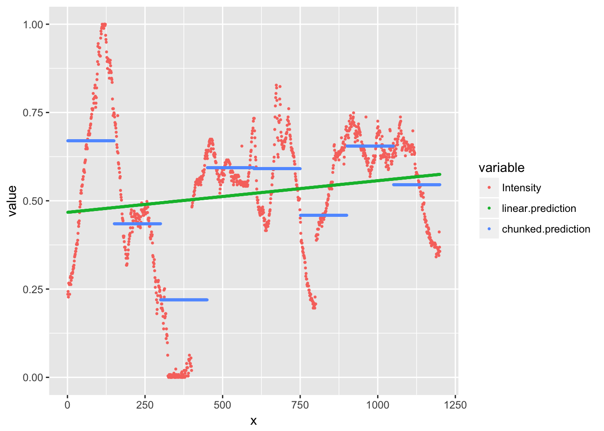
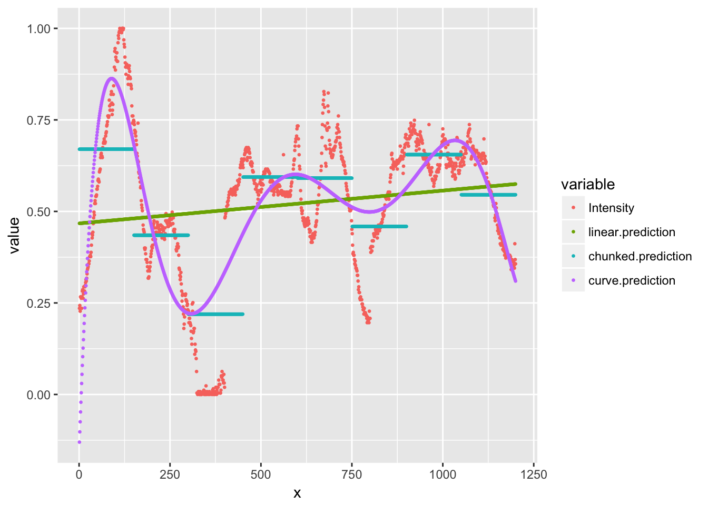
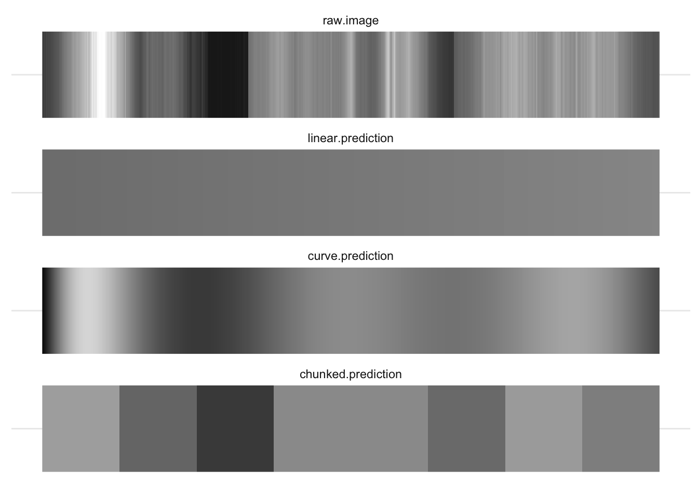

Model specification
It’s helpful to think about regression and other statistical models as if they were machines that do work for us — perhaps looms in a cloth factory. We feed the machines raw materials, and they busy themselves producing the finished cloth. The nature of the finished cloth is dependent on two factors: the raw material we feed it, and the setup and configuration of the machine itself.
In regression (and Anova) the same is true: Our finished results are the parameter estimates the model weaves from our raw data. The pattern we see depends on the configuration of the machine, and it’s important to realise the same data can provide very different outputs depending on the setup of the machine.
Equivalent models
In some cases the ‘setup’ of the machine produces changes which, although they appear very different, are in fact equivalent in some sense. Let’s say our weaving machine produces a lovely set of rugs, shown in the figure below:

Rugs made in configuration 1
Now imagine that we flip all the standard settings on the weaving machine. We feed the same raw materials to the loom, but the results look very different:
Rugs made after configuration is changed
The second set of rugs are inversions of the first, but the patterns remain the same. The same sort of thing happens when we recode variables before entering them in our regression models. For example:
coef(lm(mpg ~ wt, data=mtcars))
(Intercept) wt
37.285126 -5.344472 We can run a completely equivalent model if we ‘flip’ the weight (wt) coefficient by multiplying by -1:
mtcars$wt.reversed <- -1 * mtcars$wt
coef(lm(mpg ~ wt.reversed, data=mtcars))
(Intercept) wt.reversed
37.285126 5.344472 These models are equivalent in all the important ways: the test statistics, p values are all the same: only the sign of the coefficient for weight has changed.
The same kind of thing happens when we choose a different coding scheme for categorical variables (see section below): although the parameter estimates change when the coding format thcnages, the underlying model is equivalent because it would make the same predictions for new data.
Non-equivalent models
In the case above we saw models which were equivalent in the sense that they produced identical predictions for new observations.
Now we need to stretch our rug analogy a little, but imagine the output of our machine is now an image of the northern lights, as in image A below, but that by changing some settings of the machine, we might instead produce image B:

Image credit: https://www.flickr.com/photos/undercrimson/13155461724
You might reasonably ask why we would prefer image B or C to image A? The answer is that, when running statistical models, we must remember that they are always simplifications of reality that are (hopefully) useful to us.
For example, our goal might be to use images of the northern lights to track the position of the aurora in the sky. If so, we might find that thresholding the picture in this way makes it easier to see where the centre of mass of the light is. By smoothing out many of the ‘ripples’ and suface level patterning in the light, the overall shape becomes clearer. And in fact this is one of the techniques computer vision systems do use to pre-process image inputs.
Likewise, we face similar problems when analysing psychological data. For example, when we measure an outcome repeatedly over a period of seconds, days or months we are probably interested in the overall shape of the change, rather than in the suface-level patterning of these changes.
Let’s stretch the images analogy again and simplify the image above by taking a single pixel high ‘slice’ through the centre of each image (A, B and C). In the figure below I’ve stretched these slices vertically so that you can see the banding in the colour, but each of these images is just a single pixel high:
Let’s simplify this even further, and convert these images to greyscale:
We might think of these 3 images as follows:
‘Raw’ represents our raw data (image A above), and the greys represent the value of our ‘outcome’ (intensity of light). The x-axis in this case is position in the sky, but could just as well be time or some other continuous variable.
‘Threshold’ represents some kind of categorical model for these data (akin to image B above), in which we ‘chunk’ up the x-axis and make predictions for each chunk.
‘Smooth’ (akin to image C above) represents some kind of linear model with terms which represent the gradual changes in the outcome across the range of the x-axis (like slopes or polynomial terms in regression).
Because a digital image is just a list of intensity values for each pixel we can read the image into R and plot the raw values like any other:
intensity.vec <- as.vector(png::readPNG('media/aurora-1-px-raw.png'))
aurora.image <- data_frame(
Intensity = intensity.vec) %>%
mutate(x = row_number())
aurora.image %>%
ggplot(aes(x, Intensity)) +
geom_point(size=.5)
Figure 7.1: Plot of the intensity of light in the single pixel slice from the Aurora image. Intensity of 1 corresponds to white, and 0 to black in the original image.
We can fit linear models to these data, just like any other. So we migth start by predicting intensity with a simple slope:
aurora.linear <- lm(Intensity ~ x, data=aurora.image)And we could make predictions from this model and plot them against the original:
aurora.image %>%
mutate(linear.prediction = predict(aurora.linear)) %>%
reshape2::melt(id.var='x') %>%
ggplot(aes(x, value, group=variable, color=variable)) +
geom_point(size=.5)
Warning: attributes are not identical across measure variables; they will
be dropped
As we can see, our predictions are pretty terrible, because the linear model only allows for a simple slope over the range of x.
To improve the model, we can go in one of two ways:
- Fit slopes and curves for
x - Break
xup into chunks
Chunks
# Create a new chunked x variable (a factor)
x.in.chunks <- cut(aurora.image$x, breaks=8)
# Run a model with these chunks as a factor
aurora.chunks <- lm(Intensity ~ x.in.chunks, data=aurora.image)
# Plot the predictions again
aurora.image %>%
mutate(
linear.prediction = predict(aurora.linear),
chunked.prediction = predict(aurora.chunks)
) %>%
reshape2::melt(id.var='x') %>%
ggplot(aes(x, value, group=variable, color=variable)) +
geom_point(size=.5)
Warning: attributes are not identical across measure variables; they will
be dropped
That’s somewhat better, although we can still see that the extremes of our observed data are not well predicted by either the linear model (the flat line) or the chunked model.
Try cutting the x variable into more chunks. What are the pros and cons of doing this? How many chunks would you need to reproduce the original data faithfully?
Slopes and curves
An alternative strategy at this point is to try and fit smooth curves through the data. One way of doing this (explained in greater detail in the section on polynomials) is to fit multiple parameters to represent the initial slope, and then changes in slope, across the values of x. In general, we need to fit one parameter for each change in ‘direction’ we want our cuve to take.
For example, we can fit a curve with 3 changes of direction by fitting the ‘third degree’ polynomial:
aurora.curve <- lm(Intensity ~ poly(x, 3), data=aurora.image)
aurora.image %>%
mutate(
curve.prediction = predict(aurora.curve)
) %>%
reshape2::melt(id.var='x') %>%
ggplot(aes(x, value, group=variable, color=variable)) +
geom_point(size=.5)
Warning: attributes are not identical across measure variables; they will
be droppedOr we could increase the number of parameters in our curve to allow a tighter fit with the raw data and plot all the models together:
aurora.curve <- lm(Intensity ~ poly(x, 7), data=aurora.image)
all.predictions <- aurora.image %>%
mutate(
linear.prediction = predict(aurora.linear),
chunked.prediction = predict(aurora.chunks),
curve.prediction = predict(aurora.curve)
) %>%
reshape2::melt(id.var='x')
Warning: attributes are not identical across measure variables; they will
be dropped
all.predictions %>%
ggplot(aes(x, value, group=variable, color=variable)) +
geom_point(size=.5)
We can see that this curved model is a better approximation to the raw data than our ‘chunked’ model in some places (e.g. x = 100), but worse in others (e.g. x = 625). Overall though, the R2 is much higher for the curves model here:
summary(aurora.chunks)$r.squared
[1] 0.4463338
summary(aurora.curve)$r.squared
[1] 0.6162421And this is the case even though our model contains only 8 parameters, and so is just as parsimonious as the chunked model above.
# count the number of parameters in the chunked and curved models
length(coef(aurora.chunks))
[1] 8
length(coef(aurora.curve))
[1] 8Try to plot a curve that fits even more closely to the data. There are 1200 pixels in our original image. How many parameters would you need for the model to fit the image exactly? What happens in practice if you try and fit this model?
For fun, we can even plot our data back in image form and see which is closest to matching the original:

There is no ‘right answer’ here: each model has pros and cons. You need to think about what the purpose of your model is, how you want to simplify your data, and then set up your models appropriately.
Effect/dummy coding and contrasts
TODO: Explain this:
options(contrasts = c("contr.treatment", "contr.poly"))
lm(mpg~factor(cyl), data=mtcars)
Call:
lm(formula = mpg ~ factor(cyl), data = mtcars)
Coefficients:
(Intercept) factor(cyl)6 factor(cyl)8
26.664 -6.921 -11.564
options(contrasts = c("contr.sum", "contr.poly"))
lm(mpg~factor(cyl), data=mtcars)
Call:
lm(formula = mpg ~ factor(cyl), data = mtcars)
Coefficients:
(Intercept) factor(cyl)1 factor(cyl)2
20.5022 6.1615 -0.7593 Centering (is often helpful)
When interpreting regression coefficients, and especially when interactions are present in a model, it’s often overlooked that the regression parameters are the effect on the outcome of a 1-unit change in the predictor, when all the other predictors are zero. This applies to the intercept too: it is the predicted value of the outcome when all of the predictors are zero.
This is unhelpful because it makes the intercept mostly meaningless, and the other coefficients harder to interpret.
It’s often a good idea to center your predictors so that you can interpret the intercept of the model as the average of your sample.
Scaling inputs
Interpreting regression coefficients requires that we think in the units of the predictor.
For example, if we include ‘age in years’ in our model, then this yob coefficient gives us the change in the outcome for each additional year.
However, we’re often not interested in the effect of a single year. If we are dealing with the effect of age in the general population, we’re unlikely to care about the effect of 1 year, and it might be more useful and natural to think about 10-year differences in age. In contrast, if our research is on adolescence, then the changes of the course of a year might be too crude, and we may want to think about changes over months instead.
It’s important to realise there is no general or ‘correct’ solution to this problem. Regression models don’t care about the scale of our variables (within limits), but we do need to make choice about how we scale inputs. These choices should aim to
- make regression coefficients easily interpretable and
- make results comparable across studies
These two goals will not always be 100% aligned, and there will be tradeoffs needed as you select your strategy, which will normally be one of:
Putting coefficients on a ‘natural’ scale or relate to meaningful quantities
Standardising coefficients.
Using a ‘natural’ scale
This will often mean just leaving your predictors ‘as-is’, but it might also mean dividing your predictor by some number to put it into more convenient units. For example, dividing age in years by 10 would mean that you can interpret the coefficient as the change over a decade, which might be easier to think about.
Standardising
Gelman [@gelman2008scaling] recommends standardising coefficients by centering and dividing by two standard deviations. This can be useful because binary variables like sex (male/female) will then be on a similar scale to numeric inputs.
However, be cautious when standardising. You will sometimes see people interpret standardised coefficients in terms of ‘relative importance’ of the predictors. For example, they might say that if \(\beta^1 = .2\) and \(\beta^2 = .4\) then \(\beta^2\) is twice as important as \(\beta^\). Although this is appealing, it’s not always valid.
The main problem is that you don’t always know whether you have a full range of values of predictors in your sample. For example, imagine a case where the a regression coefficient for age was linear, and = .5 in a sample from the general population.
We can plot these data to show the effect of age, and gender:
ggplot(incomes, aes(age, income, group=gender, color=gender)) + geom_point() + geom_smooth(se=F, method="lm")
Older people earn more than younger people, and men earn slighly more than women (in this simulated dataset), but this gender gap doesn’t change with age.
We can model this and print the effects of age and gender:
m1 <- lm(income~age+gender, data=incomes)
coef(m1)
(Intercept) age gender1
30494.75486 30.75124 -486.30867 And we can standardize these effects using the stadardize function:
coef(arm::standardize(m1))
(Intercept) z.age c.gender
31727.1240 920.5955 972.6173 Based on these standardised coefficients we migth say that age and gender are of roughly equal importance in predicting income.
If we re-fit the model on a subset of the data, for example only individuals under 40, the regression coefficients won’t change much because the effect was constant across the range of ages:
younger.incomes <- incomes %>%
filter(age<40)
m2 <- lm(income~age+gender, data=younger.incomes)
coef(m2)
(Intercept) age gender1
30522.7491 29.6859 -525.4932 But, the standardised coefficients do change, because we have restricted the range of ages in the sample:
coef(arm::standardize(m2))
(Intercept) z.age c.gender
31372.5885 542.2628 1050.9863 The standardised effect of age is now roughly half that of gender.
The take home message here is that standardisation can be useful to put predictors on a similar scale, but it’s not a panacea and can’t be interpreted as a simple measure of ‘importance’. You still need to think!
Alternatives to rescaling
A nice alternative to scaling the inputs of your regression is to set aside the raw coefficients and instead make predictions for values of the predictors that are of theoretical or practical interest. The section on predictions and marginal effects has lots more detail on this.
What next
It is strongly recommended that you read the section on Anova before doing anything else.
As noted above, R has a number of important differences in it’s default settings, as compared with packages like Stata or SPSS. These can make important differences to the way you interpret the output of linear models, especially Anova-type models with categorical predictors.